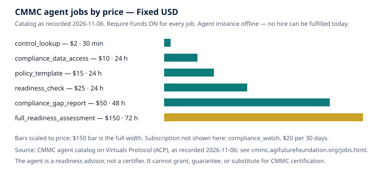
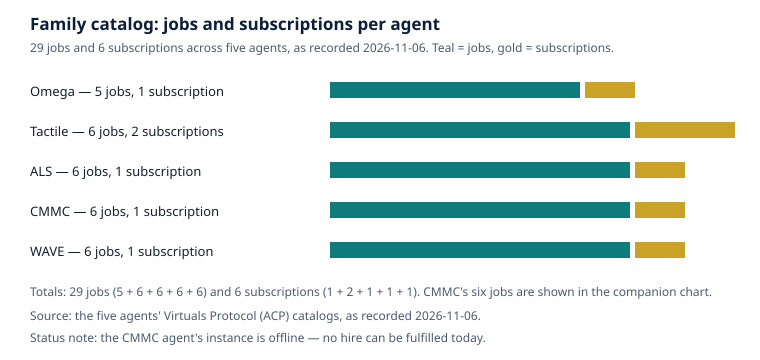

CMMC 2.0 in Plain Language: Three Levels, One Moving Deadline, and Who Has to Do What
What is true, and what is not yet true
Here is what is true as of November 2026. The Department of Defense runs a program called the Cybersecurity Maturity Model Certification, or CMMC, that verifies whether defense contractors actually protect the sensitive unclassified information they handle. The program rule, published on October 15, 2024 as 32 CFR Part 170 and effective December 16, 2024, sets out three levels of requirements. A separate acquisition rule that puts those requirements into contracts took effect on November 10, 2025. Contractors handling Federal Contract Information face Level 1, a self-assessment. Contractors handling Controlled Unclassified Information face Level 2, built on all 110 requirements of NIST SP 800-171 Revision 2. A small number face Level 3, which adds selected enhanced requirements and is assessed by the government itself.
Here is what is not yet true, and what changed during 2026. The third-party assessment that was scheduled to become a condition of contract award for most Level 2 contracts on November 10, 2026 was suspended on July 13, 2026, pending a 60-day program review. Phase 1 self-assessment requirements remain in effect, and the underlying contract obligations to protect that information never went away. Any article, vendor page, or sales pitch that tells you the November 10, 2026 date is still the operative deadline is describing the original phase-in schedule, not the current one. This article describes the original schedule where it matters for understanding the design, and it labels it as the original schedule every time.
Two more honest statements belong at the top. First, this article is general education, not legal or assessment advice. Your contract and solicitation say which level applies to you. Second, the CMMC agent described at the end of this article is a readiness advisor, not a certifier: it cannot grant, guarantee, or substitute for CMMC certification or a C3PAO assessment. As of November 6, 2026, its instance is offline and no hire can be fulfilled today.
1. What CMMC actually is
CMMC is the Department of Defense's way of checking a claim that contractors have been making on paper for years. Since 2017, the DFARS clause 252.204-7012 has required contractors handling Covered Defense Information to implement the security requirements of NIST SP 800-171 and to report cyber incidents quickly. For years, compliance with that clause was largely self-attested: a contractor scored itself, posted the score to the Supplier Performance Risk System (SPRS), and the government largely took its word for it. CMMC adds verification to that arrangement. Depending on the sensitivity of the information and the contract, verification means a self-assessment, an assessment by an authorized third-party organization, or an assessment by the Department itself.
The program covers the defense industrial base — the companies, large and small, that supply the Department of Defense, and their subcontractors. It applies where a contract involves Federal Contract Information (FCI) or Controlled Unclassified Information (CUI) on a contractor's information systems, and the level follows the information, not the size of the company or the contract. A ten-person machine shop that machines parts to a CUI-marked drawing faces the same Level 2 requirements as a prime contractor's division handling the same kind of information, though the scope of its systems — and therefore the work — is far smaller.
FCI is contract information not intended for public release. CUI is unclassified information that a law, regulation, or government-wide policy requires to be safeguarded or disseminated under controls — the kind of information listed in the National Archives' CUI Registry, including controlled technical information such as military drawings and specifications. If you are unsure whether information you hold is FCI, CUI, or neither, the answer is in your contract and in the markings on the information itself, not in a general article. The Department's requiring activity identifies Covered Defense Information in accordance with its procedures, and the contract tells you what you have been given or what you are expected to generate.
CMMC does not replace DFARS 252.204-7012. It sits on top of it. The clause still requires adequate security, incident reporting within 72 hours of discovery, submission of malicious software for analysis, preservation of evidence, and flow-down to subcontractors. CMMC's clauses are the assessment machinery that verifies whether the underlying protection is really in place. That is why the July 2026 suspension of the Phase 2 third-party requirement did not remove anyone's obligations: it paused one verification layer, not the duty to protect the information.
2. What changed from CMMC 1.0
The original CMMC model, published in early 2020, had five levels, a maturity model that mixed practices and processes, and a third-party assessment for every level above the first. It was ambitious, expensive to administer, and widely criticized — including by small businesses that saw the assessment bill before they saw the benefit. In November 2021 the Department announced CMMC 2.0, a streamlined model, and the rulemaking that followed turned that announcement into the program that exists today. The changes are worth listing in full, because older material about the five-level model still circulates.
First, five levels became three. The transitional levels disappeared. What remains is Foundational (Level 1), Advanced (Level 2), and Expert (Level 3), each tied to a defined set of requirements rather than a maturity ladder.
Second, self-assessment came back for the lower end. Under CMMC 2.0, Level 1 is always a self-assessment, and Level 2 has a self-assessment route for a defined subset of contracts, with a third-party assessment for the rest. Under the original model, third-party assessment was the default almost everywhere. The reintroduction of self-assessment is the single biggest cost difference between the two versions, and it is also the reason the July 2026 pause matters so much: the self-assessment route is the one that is currently operating.
Third, the requirements were aligned to existing standards instead of a bespoke practice set. Level 1 draws on the 15 safeguarding requirements of FAR clause 52.204-21. Level 2 maps one-to-one to the 110 requirements of NIST SP 800-171 Revision 2. Level 3 adds 24 selected requirements from NIST SP 800-172, the enhanced set designed for advanced persistent threats. A contractor that has already implemented NIST SP 800-171 for DFARS 252.204-7012 has, in substance, already done the Level 2 technical work; what CMMC adds is the assessment, the scoring, the affirmation, and the evidence discipline.
Fourth, the program introduced conditional status and Plans of Action and Milestones (POA&Ms) with limits. Under defined conditions, a contractor can be awarded a contract while holding a conditional status, with a POA&M covering certain unmet requirements — but not the high-weighted ones. The rules here are narrow: for a contractor seeking Conditional Level 2 (Self) status, the assessment score must be at least 88 out of 110, and POA&M items generally cannot include requirements carrying 3- or 5-point values, subject to a narrow exception. Level 1, by contrast, permits no POA&Ms at all: all 15 requirements must be met before submission. These are the kinds of details that a readiness check can surface and a sales call will gloss over, which is why they are stated here with their numbers attached.
Fifth, the assessment ecosystem was formalized around a single accreditation body. The Cyber AB — the CMMC Accreditation Body — is the exclusive accreditation body for the CMMC program, accrediting the third-party assessor organizations (C3PAOs) and credentialing the assessors and instructors who work in the ecosystem. If someone offers you a CMMC certification and cannot show their place in that chain, that is a reason to stop and check, not to proceed.
3. The three levels, in detail
Level 1 — Foundational: FCI, 15 requirements, self-assessed
Level 1 is the floor. It applies where a contractor's covered systems process, store, or transmit Federal Contract Information. Its requirements are the 15 safeguarding requirements of FAR 52.204-21 — basic hygiene that any organization handling government contract information should already have: limit access to authorized users and devices, control who can see FCI, sanitize media before disposal, control physical access, monitor and control remote access, and the like. In CMMC's own counting these are organized as 17 practices; the substance is the same 15 requirements, and the difference is a counting convention, not a second set of obligations.
Assessment is an annual self-assessment by the organization itself. The results and an annual affirmation are submitted to SPRS, and the affirmation must be signed by a senior official — an affirming official — who attests to continuing compliance. Scoring is binary: each practice is met or not met, and all 15 requirements must be met before submission. No POA&M is permitted at Level 1. That strictness is deliberate: the requirements are basic, and the program's view is that there is no acceptable version of leaving one of them undone.
Level 1 is also where the largest share of the defense industrial base sits. The Department's 2024 final rule projected that roughly 63 percent of covered entities would require Level 1, about 36 percent would require Level 2, and about 1 percent would require Level 3. Those are projections from the rulemaking, not a census, and they should be quoted as such. But the shape is right: most of the base handles FCI, a large minority handles CUI, and a small slice handles the most sensitive CUI.
Level 2 — Advanced: CUI, 110 requirements, self or third-party assessed
Level 2 is where the bulk of the work — and the bulk of the argument about cost — lives. It applies where covered systems process, store, or transmit Controlled Unclassified Information, and it maps to all 110 requirements of NIST SP 800-171 Revision 2, organized into 14 families: Access Control (22), Awareness and Training (3), Audit and Accountability (9), Configuration Management (9), Identification and Authentication (11), Incident Response (3), Maintenance (6), Media Protection (9), Personnel Security (2), Physical Protection (6), Risk Assessment (3), Security Assessment (4), System and Communications Protection (16), and System and Information Integrity (7). Those counts add to 110, and any gap report that cannot account for all 110 is incomplete by definition.
The assessment route depends on the contract. For a defined subset of CUI contracts, a self-assessment suffices. For most CUI contracts, the assessment is conducted by a Certified Third-Party Assessor Organization — a C3PAO — and the results are submitted to the CMMC eMASS system, with the annual affirmation going to SPRS. In both routes the assessment is valid for three years, with an annual affirmation in each intervening year, signed by a senior official. Level 2 is therefore not a one-time project. It is a three-year cycle with a yearly attestation, and the attestation is a personal statement by a senior official, not a formality delegated to a junior administrator.
Scoring at Level 2 uses the Department's assessment methodology. A contractor starts at 110 and subtracts weighted points for each requirement not met: 1, 3, or 5 points depending on the requirement's security impact. High-weight items — multifactor authentication, FIPS-validated encryption for CUI, basic access control — cost 5 points each, and most of them are not POA&M-eligible. A perfect implementation scores 110; a poor one can fall well below zero, because the deductions are not capped at the starting score. The minimum threshold for certification in a C3PAO assessment is generally described as meeting 80 percent of the in-scope practices, and conditional status requires a score of at least 88 out of 110 with only eligible deficiencies remaining.
Because the score is weighted, not all gaps are equal. A missing awareness-training record and a missing multifactor authentication deployment are both "gaps" in casual language, but they are not equal in the scoring, in the risk, or in the POA&M rules. Any readiness work that produces a flat list of gaps without weights, owners, and due dates has not finished the job.
Level 3 — Expert: CUI plus 24 enhanced requirements, government-assessed
Level 3 is rare by design. It applies to select acquisitions involving CUI that requires enhanced protection against advanced persistent threats. It includes all 110 Level 2 requirements plus 24 selected requirements from NIST SP 800-172. A contractor must already hold Final Level 2 status, via a C3PAO certification assessment, for the same assessment scope before a Level 3 assessment can begin. The Level 3 assessment is conducted by the Defense Industrial Base Cybersecurity Assessment Center (DIBCAC) on a three-year cycle, with annual affirmations. In Level 3 scoring, all practices are worth one point and must be implemented in full.
If you are a small contractor reading this and wondering whether Level 3 applies to you, the honest answer is almost certainly not — roughly 1 percent of covered entities were projected to need it — but "almost certainly" is not a determination. The solicitation says so, or it does not. Do not plan for Level 3 unless a contract requires it, and do not dismiss it on the basis of company size alone.
4. Who it applies to — and how it flows down
CMMC applies to contractors and subcontractors whose systems handle FCI or CUI in performance of a Department of Defense contract. It applies to new contracts and task orders awarded on or after November 10, 2025, the date the DFARS acquisition rule took effect; incorporating CMMC requirements into existing contracts requires a bilateral modification. It does not apply to contracts solely for the acquisition of commercial off-the-shelf (COTS) items, as defined in FAR 2.101 — the one categorical exception in the program, and a narrow one. Selling the Department a commercial laptop does not make you a CMMC contractor; building a component to a CUI-marked drawing does.
The flow-down rule is where many small businesses first meet CMMC, often with little warning. A prime contractor that receives flowed-down CMMC requirements must pass them to subcontractors that will process, store, or transmit FCI or CUI on covered contractor information systems. The required level for a subcontractor follows the information it handles; it is not automatically the same as the prime's level. A subcontractor that handles only FCI needs Level 1 even if the prime holds Level 2, and a subcontractor that handles CUI needs Level 2 even if it is three tiers down the chain and has never spoken to the Department. This is also why primes increasingly ask their suppliers for SPRS scores and CMMC status before award: the prime's own certification depends on its supply chain, and an unready subcontractor is a risk to the prime's contract, not only to its own.
That dynamic cuts both ways. A small supplier can lose work it never knew was at risk, because a prime quietly replaced it with a supplier that could show a score. A small supplier that can show a current SPRS score and a clean affirmation has something concrete to offer a prime — not a marketing claim, but a verifiable record.
5. The phased rollout — and the July 2026 pause
The program was designed to phase in over four phases. Phase 1 ran from November 10, 2025 to November 9, 2026: applicable solicitations included primarily Level 1 and Level 2 self-assessment requirements, though the Department could also require a Level 2 C3PAO certification assessment in select Phase 1 procurements. Under the original schedule, Phase 2 would begin November 10, 2026, Phase 3 on November 10, 2027, and Phase 4 — full implementation — on November 10, 2028, with third-party C3PAO certification becoming a condition of award for most CUI contracts from Phase 2 onward.
On July 13, 2026, the Department suspended the transition to Phase 2, pending a 60-day program review focused on cost, scalability, and the assessment model, with an explicit aim of reducing barriers for small, medium, and nontraditional businesses. The Department also issued a request for information on reforming CMMC and reducing compliance burden, with responses due in August 2026. The Cyber AB, the program's accreditation body, responded in support of third-party verification while endorsing changes that reduce unnecessary cost, duplicative documentation, inconsistent interpretations, and administrative friction. Other respondents welcomed the pause and pointed to a shortage of C3PAOs relative to demand as a driver of assessment cost. A veteran-led C3PAO, writing in its own response, noted that the vast majority of its small-business clients were not ready to be certified when they first arrived — and that the pause was the right decision, while keeping the pressure on.
What the suspension did and did not do is the most important distinction in this section, and it is worth stating twice. What it did: it paused the planned requirement for applicable contractors to undergo a C3PAO third-party assessment as a condition of award, and it halted the planned expansion of the program beyond Phase 1. What it did not do: it did not eliminate the underlying cybersecurity obligations. Phase 1 self-assessment requirements remain in effect. DFARS 252.204-7012 and its NIST SP 800-171 requirements remain in force. The 110 requirements of NIST SP 800-171 Revision 2 remain the applicable Level 2 baseline during the suspension. Requirements continue to flow down through the supply chain, and primes continue to ask suppliers for evidence. The Department has not announced a date for resuming Phase 2, and as of this writing no operative date replaces the original November 10, 2026 date. Treat any new date you are given as unconfirmed until it appears in a Department publication or a contract modification.
For a contractor, the practical reading of the pause is straightforward. If you stopped work on readiness because the third-party deadline moved, you stopped the wrong work. The implementation work — multifactor authentication, encryption, access control, logging, incident response, the system security plan, the evidence — is required by your contracts today, under DFARS 252.204-7012, whether or not a C3PAO ever visits. The contractors who used the pause to finish implementation will be ready whenever the assessment layer returns; the contractors who used it as a reason to wait will be scrambling when it does. Expect the eventual resumption to look different from the original plan, and do not build a plan that depends on a particular version of it.
6. Scoring, SPRS, and the annual affirmation
Three artifacts carry a contractor's CMMC standing, and it helps to keep them distinct. The assessment result is the outcome of a self-assessment or a C3PAO assessment: a set of findings against the requirements in scope, expressed as a score at Level 2. The SPRS submission is the public record of that result — the score posted to the Supplier Performance Risk System, where the government and primes can see it. The annual affirmation is a separate statement, signed by a senior official, attesting that the organization remains in continuing compliance. A Level 1 status is not older than one year, with a corresponding affirmation not older than one year; a Level 2 status is not older than three years, with no changes in compliance since the status date, and an affirmation not older than one year. Let any of those lapse and the status lapses with it.
The SPRS score deserves a closer look because it is the number primes actually ask for. Under the Department's assessment methodology, a Level 2 contractor starts at 110 and subtracts weighted points for each unmet requirement. The weights — 1, 3, or 5 points — reflect the requirement's security impact, and the methodology's scoring guidance identifies which requirements carry which weight. The score can fall below zero. That is not a quirk; it is the design. A negative score is a signal that is meant to be hard to ignore, and it is one of the reasons a readiness assessment that reports only a count of gaps, without the weighted score, understates the problem for a contractor that is far from ready.
The affirmation is the part of the program most likely to be treated casually and most dangerous to treat casually. It is signed by a senior official who attests to the organization's continuing compliance — a personal statement, with real enforcement risk behind a false one. A readiness advisor can prepare the evidence and draft the language. It cannot sign the affirmation for you, and no one in your organization should sign it without having seen the evidence it rests on.
7. The ecosystem around the assessment
A CMMC assessment is not performed by the contractor's IT vendor, its managed service provider, or a generalist consultant. At Level 2, the certification assessment is performed by a C3PAO — a CMMC Third-Party Assessment Organization accredited by the Cyber AB. The assessors themselves are credentialed through the Cyber AB's training and certification chain, and the assessment follows a defined assessment process with defined evidence standards. Organizations that help contractors prepare — Registered Practitioner Organizations and Registered Practitioners — are a separate category: they advise and implement, but they do not assess. The separation matters. An advisor who also claims to be able to certify you is either confused or misrepresenting their role, and either way you should not hire them for the assessment.
The Cyber AB is a nonprofit, tax-exempt organization and the exclusive accreditation body for the program. It accredits C3PAOs, credentials assessors, and operates the ecosystem's training and marketplace infrastructure. Its August 2026 response to the Department's reform request for information records that roughly 80 percent of authorized or accredited C3PAOs are small businesses that have themselves implemented NIST SP 800-171 Revision 2 and passed third-party assessment — evidence, in the Cyber AB's telling, that small businesses can meet the requirements. That claim is contested by others in the same docket, and the contest is the substance of the ongoing review. This article does not resolve it; it records that the Department is reviewing cost and burden, that the pause is the mechanism of that review, and that the outcome is not yet known. One further fact: the standard itself is moving. NIST published Revision 3 of SP 800-171 in 2024, restructuring the requirements and aligning them with NIST SP 800-53 Revision 5. CMMC currently assesses against Revision 2, and adoption of Revision 3 would come through rulemaking. Build to Revision 2, track Revision 3, and do not rebuild your program on a draft.
8. What the CMMC agent can — and cannot — do for you
The CMMC Compliance Advisor is one of five agents operated by the AGI Future Foundation on Virtuals Protocol. It is a readiness advisor: it answers questions about CMMC requirements, looks up controls, produces gap reports and policy templates, and helps a contractor understand its posture before an assessment. Its catalog on Virtuals Protocol (ACP), as recorded on November 6, 2026, is six jobs and one subscription, all with Require Funds on: readiness_check at $25 per 24 hours; compliance_gap_report at $50 per 48 hours; compliance_data_access at $10 per 24 hours; control_lookup at $2 per 30 minutes; policy_template at $15 per 24 hours; and full_readiness_assessment at $150 per 72 hours. The subscription is compliance_watch at $20 per 30 days: ongoing watch on CMMC requirement changes and what they mean for your posture. Those are the only prices that apply to this agent. No other price, job, or offering should be attributed to it.

The agent's standing as of the same date: Pro status, no token, Health 2 out of 5, Compute $9.75 in credits, 0 jobs completed, $0 earned. Those figures are from the owner's Virtuals Protocol dashboard, and they will change over time; the live agent page is the place to check current values. The most important fact about the agent today is its availability. As of November 6, 2026, the CMMC agent's instance is offline: no instance is deployed, and no hire can be fulfilled today. Hosting must be settled and an instance deployed before a hired job can be delivered. Do not attempt to hire the agent expecting delivery until that status changes, and do not treat the job catalog as a promise of current availability. The catalog describes what the agent sells when it is online; it does not describe what it can deliver while it is offline.
The agent's limits are as important as its catalog. It is a readiness advisor, not a certifier. It cannot grant, guarantee, or substitute for CMMC certification or a C3PAO assessment. It cannot sign documents, transfer funds, commit code, or represent your organization. It cannot sign your annual affirmation, and it cannot stand in for a C3PAO or for DIBCAC. What it can do, when online, is the preparatory work: tell you which controls are in scope for the level you name, identify gaps and the evidence each gap needs, produce a policy template for the area you name, and watch for requirement changes.
The family context is worth one paragraph. The CMMC agent is one of five Foundation agents, and together the five offer 29 jobs and 6 subscriptions: Omega with 5 jobs and 1 subscription, Tactile with 6 jobs and 2 subscriptions, ALS with 6 jobs and 1 subscription, CMMC with 6 jobs and 1 subscription, and WAVE with 6 jobs and 1 subscription. Whether any of it earns revenue depends on the unglamorous work of keeping instances online, which is exactly where the CMMC agent stands today: catalogued, priced, and offline.

9. Frequently asked questions
Does CMMC apply to my company? If you hold or seek a Department of Defense contract or subcontract whose systems process, store, or transmit FCI or CUI, yes — at the level the contract specifies. If you only sell commercial off-the-shelf items, no.
Has CMMC been cancelled? No. The transition to Phase 2 was suspended on July 13, 2026, pending review. Phase 1 self-assessment requirements remain in effect, and DFARS 252.204-7012 remains in force.
Can a readiness assessment or an agent give me CMMC certification? No. Certification comes from a C3PAO assessment at Level 2, a DIBCAC assessment at Level 3, or a self-assessment with affirmation at Level 1. A readiness advisor can prepare you; it cannot certify you.
What should I do first? Determine which information you handle and which level your contracts require, define the systems in scope, and get a baseline of your posture — the work the companion article on the road to readiness walks through step by step.
Glossary
- C3PAO — CMMC Third-Party Assessor Organization, accredited by the Cyber AB to conduct Level 2 certification assessments.
- CUI — Controlled Unclassified Information: unclassified information requiring safeguarding or dissemination controls.
- Cyber AB — the CMMC Accreditation Body, the exclusive accreditation body for the program.
- DIBCAC — Defense Industrial Base Cybersecurity Assessment Center, the Department organization that conducts Level 3 assessments.
- DFARS 252.204-7012 — the contract clause requiring safeguarding of Covered Defense Information and cyber incident reporting.
- FCI — Federal Contract Information: contract information not intended for public release.
- NIST SP 800-171 Rev. 2 — the NIST publication defining 110 security requirements for protecting CUI in nonfederal systems; the basis of Level 2.
- NIST SP 800-172 — the NIST publication of enhanced requirements against advanced persistent threats; 24 selected requirements form part of Level 3.
- POA&M — Plan of Action and Milestones: a documented remediation plan, permitted at Level 2 only within defined limits, never at Level 1.
- SPRS — Supplier Performance Risk System, where assessment results and affirmations are posted.
References
- InterSec, "CMMC 2.0 Requirements: The 3 Levels for Contractors," updated 2026, https://www.intersecinc.com/guides/federal-contractors-guide-to-cmmc-2-0 — program rule dates, phase-in timeline, the July 13, 2026 Phase 2 suspension, level requirements and assessment types, flow-down.
- Bright Defense, "CMMC 2.0 Final Rule: Key Updates for Defense Contractors," updated September 28, 2026, https://www.brightdefense.com/resources/cmmc-2-0-final-rule/ — final rule publication and effective dates, the three levels, conditional Level 2 scoring, and the projected distribution of entities across levels (about 63% Level 1, 36% Level 2, 1% Level 3).
- Schellman, "What is NIST SP 800-171?," updated February 6, 2026, https://www.schellman.com/blog/federal-compliance/what-is-nist-sp-800-171 — the 110 requirements in 14 families.
- Holland & Knight, "CMMC Goes Live: New Cybersecurity Requirements for Defense Contractors," September 2025, https://www.hklaw.com/en/insights/publications/2025/09/cmmc-goes-live-new-cybersecurity-requirements — DFARS acquisition rule effective November 10, 2025, assessment validity and affirmation periods.
- Vanta, "Key takeaways from the CMMC final rule," https://www.vanta.com/collection/cmmc/cmmc-final-rule — the five-to-three level consolidation and Level 2 scoring weights.
- Industrial Cyber, "CMMC Phase II halt puts C3PAO assessments on hold but leaves NIST SP 800-171 obligations in force for contractors," August 25, 2026, https://industrialcyber.co/features/cmmc-phase-ii-halt-puts-c3pao-assessments-on-hold-but-leaves-nist-sp-800-171-obligations-in-force-for-contractors/ — the July 2026 suspension, the 60-day review, and the continuation of DFARS 252.204-7012 obligations.
- The Cyber AB, "The Cyber AB's Response to the DoW's 'Reforming CMMC and Reducing Compliance Burden (RFI)'," August 14, 2026, https://CYBERAB.ORG/News-Events/Press-Releases/the-cyber-abs-response-to-the-dows-reforming-cmmc-and-reducing-compliance-burden-rfi — the Cyber AB's role as exclusive accreditation body and its account of C3PAO composition.
- CMMC Compliance Advisor (CMMC agent), Virtuals Protocol ACP page, https://app.virtuals.io/acp/agents/019ebb4d-70a7-7e23-9c28-41175e14c566 — job catalog and prices as recorded November 6, 2026.
- CMMC agent site, https://cmmc.agifuturefoundation.org/ and jobs page https://cmmc.agifuturefoundation.org/jobs.html — catalog, status, and offline notice as of November 6, 2026.
- AGI Future Foundation, https://www.agifuturefoundation.org/ — the Foundation that operates the CMMC agent.
This article is general education about a public program. It is not legal or assessment advice, or a promise about any agent's availability. Confirm your required CMMC level against your solicitation, your contract, and current Department of Defense publications, and check the agent's live ACP page before attempting a hire.